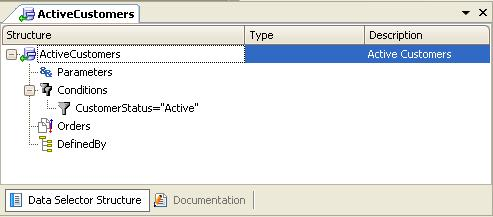

Data Selectors in Aggregations
It is possible to use Data Selector objects in Aggregate Formulas. SyntaxData Selectors can be referenced in Aggregate formulas, with the USING clause according to the following grammar: <AggFormulaName> '(' <Expression> ',' [<AggregationCondition>] ',' [<DefaultValue>] ')' Where: <AggFormulaName> could be [Find | Max | Min | Sum |Count | Average] <Expression> is an expression to be finded, maximized, minimized, summed or averaged. It can be an attribute (stored or formula), or an expression that involves attributes, variables and constants. AggregationCondition is [<Condition>] ['USING' <DataSelector> '(' <Parameters...> ')'] Notes
For example, suppose that you have "Customer" and "Country" Transactions, where each customer has a country. To count the number of active customers per country you only have to write the following: For Each CountryId &NumberActiveCustomers = Count(CustomerName, USING ActiveCustomers()) EndFor The "ActiveCustomers" Data Selector definition is as follows:  Something important to know is that the CustomerName attribute -the first parameter in the count formula- is not taken into account by GeneXus to determine the For Each Base Table. The CustomerName attribute belongs to the Formula definition. The For Each base table is COUNTRY (because CountryId is the only attribute mentioned in the For Each command outside the formula definition). The table navigated by the Formula (in which the calculation is made) is CUSTOMER (because the attributes mentioned in the formula and in the Data Selector definitions belong to the CUSTOMER table). Finally, the two tables that are navigated, COUNTRY and CUSTOMER, have a common attribute: CountryId. So, for each navigated country (by the For Each command), the Aggregate Formula defined inside the For Each (inline) considers only the active customers that belong to the country being navigated in the For Each query, at the moment of triggering the formula. See alsoData Selectors in Grids Videos |